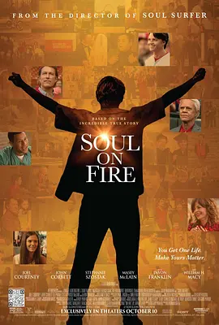

0.0
似火
Soul On Fire
2025
美国
评分 0.0
导演:
肖恩·麦克纳马拉
演员:
威廉·H·梅西 / 约翰·考伯特 / 乔尔·考特尼 / 德文·富兰克林 / Masey McLain
类型:
传记,剧情
剧情简介
影片以约翰·欧利里的人生轨迹为核心展开。从童年那场足以夺走生命的大火开始，故事便笼罩着强烈的现实重量。九岁的他在重度烧伤后被判定几乎没有生存希望，但医院病房里爆裂的呼吸声、家人守夜的剪影，以及医护人员一次次坚定的尝试，让这段濒死经历逐渐转化为顽强的重生之路。镜头细腻捕捉他漫长康复过程中的每一步：包扎时的疼痛让他咬紧牙关，练习重新站立时的颤抖让人动容，而社区的支持与家人的陪伴则成为他最坚定的依靠。影片并未将苦难戏剧化，而是通过简单却具有力量的片段，展现他如何在现实的坎坷中重新寻找方向。最温暖的线索来自棒球解说员杰克·巴克的出现。作为约翰心中多年的偶像，他以真挚的鼓励点燃了男孩重新面对世界的勇气。这份跨越年龄与身份的善意，不仅改变了约翰的青春，也在他日后的生命中留下深刻印记。长大后的他以演讲、公益和各类社会行动回馈世界，希望将自己经历的奇迹化为更多人的力量。影片整体节奏温和而饱含情感，充满真实而不煽情的力量，展现一个普通人在命运重压下如何活出炽热的生命之光。